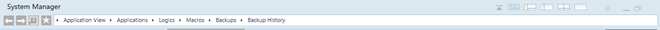

Navigation Bar
The Navigation bar displays at the top of System Manager and allows you to navigate the system without having to make selections in System Browser (see Browse and Select Objects with the Navigation Bar). It contains a set of icons, and a Breadcrumbs path that shows your current location as a series of links separated by arrows.

The Breadcrumbs path in the Navigation bar functions like a condensed version of System Browser, without the search capabilities. The selections you make in the Breadcrumbs area are reflected in System Browser. The opposite is also true: the selections you make in System Browser are reflected in the Breadcrumbs area.
Navigation Bar Icons | ||
| Name | Description |
Back Forward | Let you quickly return to recently-viewed selections. See Revisit Recent Selections from the Navigation Bar.
| |
History | Displays a list of your 20 most recently viewed selections with the current selection highlighted with a checkmark and displayed in the Primary pane.
| |
Favorite location | Jumps to a user-selectable view; when you set a favorite location the system will store it and use it as the initial selection when you first open System Manager. When switching-over to a new user, that user's Favorite location will be used as the initial selection. See Set a Favorite Location in System Manager.
| |